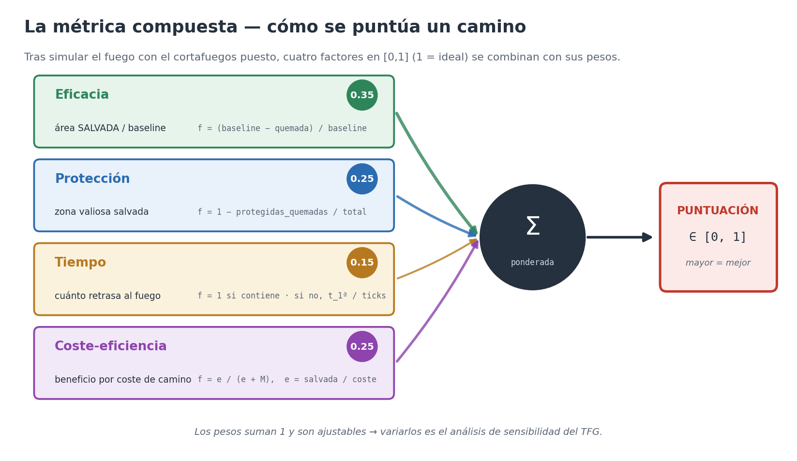

TFG · evaluación · índice
La métrica compuesta
Cómo se convierte un incendio simulado en un número que dice si un camino es bueno. Cuatro factores en [0,1], cuatro pesos que suman 1, una puntuación mayor = mejor.
Evaluar un cortafuegos es el núcleo científico del TFG. Tras simular el fuego con
el camino puesto, se miden cuatro factores y se combinan con sus pesos. Los pesos
se leen del código real (api/evaluacion.py · PesosMetrica):
si se reajustan, el diagrama cambia con ellos.
De cuatro factores a una puntuación

Los pesos, y por qué son ajustables

Lo que demuestra
La evaluación es ciencia, no anécdota: una puntuación reproducible,
normalizada contra una baseline de «no hacer nada», con pesos explícitos y
ajustables. Variarlos es justo el análisis de sensibilidad que pide la propuesta.
Ver la métrica en acción sobre fuego real.
Reproducible:
testing-lab/.venv/bin/python testing-lab/experiments/metrica.py.
El test tests/test_metrica.py verifica que los pesos dibujados son los
de PesosMetrica y suman 1, y que los cuatro factores del esquema son
los del desglose real de puntuar().